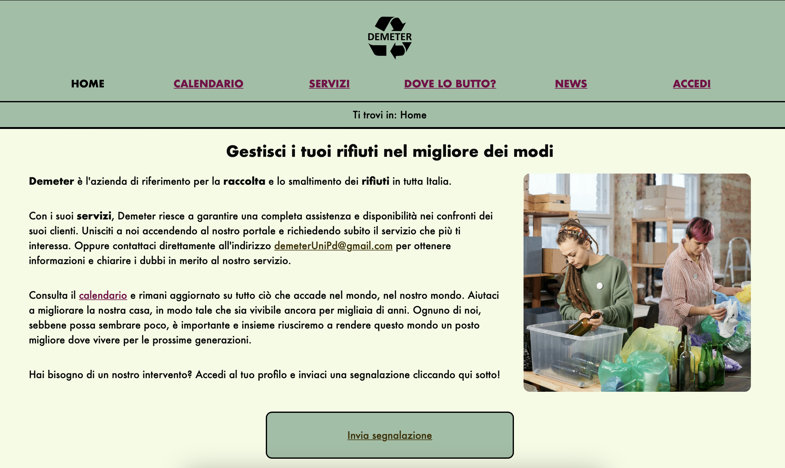

Demeter
Demeter is a project Project developed for the Web Technologies course at the University of Padua in the academic year 2023-2024. Winner of the first prize of the "Accattivante e Accessibile" competition 2024 edition, organized by the Department of Mathematics of the University of Padua.
The project has been developed with Ane-Marie Margarit, Edoardo Gallo and Silvio Nardo between November 2023 and March 2024.
Key Highlights
- User types: The site supports generic users, registered users, and administrators, each with different access levels and functionalities.
- Accessibility: The site is designed with accessibility in mind, featuring responsive layouts, breadcrumb navigation, and ARIA attributes to enhance usability for all users, including those with disabilities.
- Database: Manages user data, waste collection schedules, reports, and news articles.
- Implementation: Developed using HTML5, CSS3, PHP, and JavaScript. The project focuses on clean code structure, accessibility, and SEO optimization.
- Testing: The site underwent extensive validation using tools like W3C validators and accessibility checkers to ensure high code quality and user experience.
Project specifications
- The website must be created with the standard HTML5, the pages must degrade elegantly and must respect the XML syntax;
- The layout must be created with pure CSS (CSS2 or CSS3);
- The use of Flex and Grid layouts, if developed correctly and used reasonably, are evaluated very positively;
- The website must respect the complete separation between content, presentation and behavior;
- The website must be accessible to all categories of users;
- The website must organize its contents so that they can be easily found by any user;
- The website must contain pages that use PHP scripts to collect and publish data entered by users (the possibility of modifying and deleting the data itself must also be developed);
- Among the inputs requested from the user there must be at least one free text field;
- There must be a form of control of the input entered by the user, both client-side and server-side;
- The data entered by users must be saved in a database and it is preferable that the database is in normal form.
- The project must be accompanied by a report that illustrates the design, implementation and testing phases and highlights the role played by the individual members of the group. An initial analysis of the characteristics of the users that the site aims to reach and the possible searches on search engines to which the site must respond is required. Furthermore, the actions taken to improve the site's ranking must be indicated.
- Web pages must be accessible regardless of the browser and the screen size of the users' device. Considerations regarding different devices (where possible) will be evaluated positively.
Abstract
Demeter was developed to provide the homonymous company a modern way to promote a sustainable and environmentally friendly lifestyle. Demeter’s main mission is to lead the change towards a greener and more prosperous future, paying particular attention to the protection of our planet, committing to the production of ecological solutions, ensuring legal regulations for waste recycling.
The chosen name is a reference to the goddess Demeter, also known as “Mother Earth”. In Greek mythology, Demeter is the goddess of agriculture, constant nourisher of youth and green earth. The spirit of the Demeter company, therefore, is intertwined with the vitality of nature itself represented by the goddess Demeter, symbol of respect for nature.
The site offers a collection of pages regarding technical information on the correct recycling methods useful to the individual citizen; there are also various ecological services for each type of waste management, as well as local news regarding local projects or activities. Once logged in to the site, it allows the user to make reports, thus ensuring timely resources for each individual request.
Accessibile e Accattivante 2024
After the grade the project has been presented to the contest "Accattivante e Accessibile" in the 2024 edition. The aim of the competition is to stimulate the students to create catching websites without forgetting the accessibility. The jury was composed from tachers, representatives of specialized companies and members of the Italian Union of the Blind and Partially Sighted. Demeter won the first place.
To view the website: DEMETER
To download the documentation: DEMETER.pdf 
To download the documentation about accessibility: DEMETER.pdf
For the GitHub repository: DEMETER